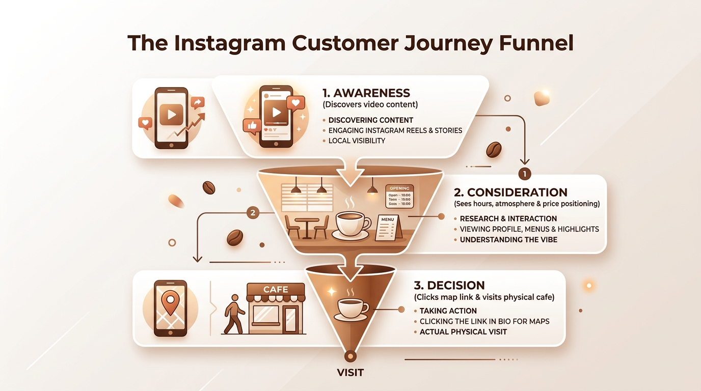
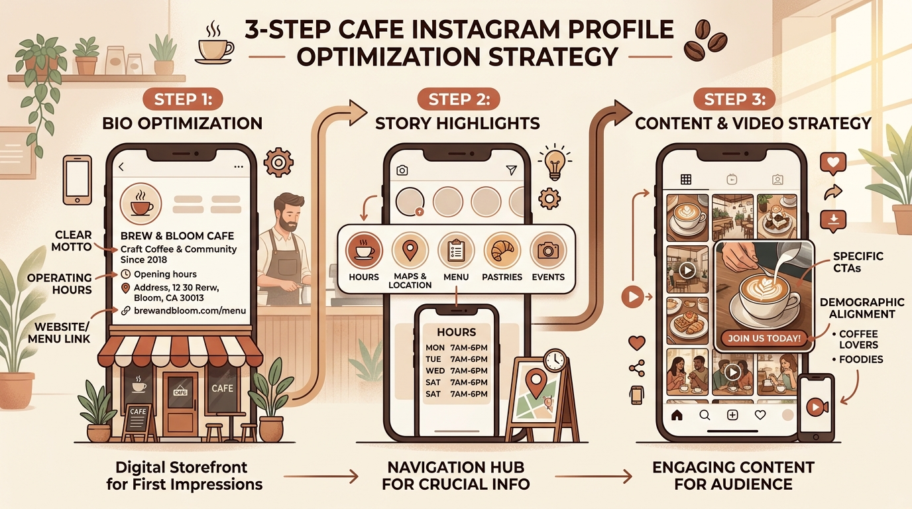

Applied Social Media Strategy: Optimizing Instagram Brand Positioning and Customer Flow for Cafe Rêve Auroville
In the modern digital landscape, a local business's social media presence functions as much more than an aesthetic showcase—it serves as the interactive digital storefront to their physical location. For vibrant local establishments like Cafe Rêve Auroville, social media offers an extraordinary opportunity to convert digital impressions into memorable, real-world foot traffic.
As a digital marketing student applying academic concepts to real-world scenarios, I developed this speculative brand case study and social media audit. Grounded in established industry frameworks—such as Canva’s guide to social media audits and strategic marketing insights from Husson University—this project evaluates the current online footprint and proposes constructive, high-leverage optimizations to elevate brand clarity, streamline the customer journey, and cultivate a loyal local community.
The Evaluation: A Constructive Social Media Audit
To evaluate the cafe’s current social media touchpoints objectively and constructively, I utilized a structured audit framework inspired by industry guidelines from Canva and Sprout Social. This methodology moves beyond surface vanity metrics (like follower count) to evaluate profile completeness, customer experience, and content alignment:
Through this constructive audit, several key areas for strategic improvement emerged:
- Profile Cohesion & Brand Alignment: Refining bio typography and visual highlights will strengthen initial brand recognition when first-time visitors land on the profile.
- Streamlining the Customer Journey: Providing a direct Google Maps link and active contact details directly in the bio removes friction, allowing high-intent guests to find directions without leaving the platform.
- Operational Transparency: Clearly publishing operational hours, daily opening times, and weekly rest days helps protect customer trust and prevents unexpected visit disappointments.
- Value-Driven Video Storytelling: Transforming short-form reels from passive showcases into value-driven stories with explicit Call-to-Actions (CTAs) gives viewers a clear next step.
- Demographic Focus & Price Tiering: Explicitly communicating the cafe's unique value proposition (such as premium organic beans) naturally filters for the target 25–30 demographic while building anticipation.
The Strategy: Focusing on "The Why" and Strategic Positioning
Similar to the strategic approach highlighted in the Husson University case study, this optimization strategy focuses deeply on the "why" behind the brand's social media presence.
Instead of treating Instagram merely as a broadcast channel for aesthetic media, our strategy repurposes the profile as a functional marketing funnel. In local hospitality marketing, the goal of social media is to smoothly guide a user through three key psychological stages:

- Awareness: Capturing the attention of local coffee enthusiasts and tourists through targeted, storytelling-focused video content.
- Consideration: Nurturing that interest by demonstrating a welcoming atmosphere, a clear brand personality, and a defined price segment.
- Decision: Eliminating all operational friction so the customer can instantly find the operational hours and coordinates to make an immediate trip.
The Solution: Actionable Optimizations
To resolve the audited friction points, we have designed a three-step optimization plan tailored specifically to the needs of Cafe Rêve Auroville.

Step 1: Bio Optimization (The Digital Storefront)
A highly optimized bio must immediately state the brand's value proposition, provide operational clarity, and offer a clear path to action. By integrating the cafe's original motto, we establish a welcoming, on-brand message from the very first glance:
Cafe Rêve Auroville
@cafe.reve.auroville • Artisanal Coffee & BakeryThis updated structure instantly tells visitors what makes the cafe special, sets clear operational expectations, and provides a direct, clickable link to eliminate customer journey friction.
Step 2: Story Highlights (Evergreen Navigation Hub)
To prevent customers from getting lost in the feed, we recommend implementing dedicated, permanently pinned Story Highlights at the top of the profile. These will act as a quick-reference website directory:
- "Hours" Highlight: A clean, visually pleasing graphic detailing standard operational hours and any special holiday schedules.
- "Location/Map" Highlight: Clear step-by-step instructions or direct links to their Google Maps pin, making it effortless for tourists to navigate.
Note: In alignment with our friction-reduction strategy, we have intentionally omitted a "Menu" highlight containing specific price tags. Leaving detailed menu pricing off the profile preserves customer curiosity and encourages high-intent users to visit the physical cafe to explore the daily offerings.
Step 3: Content and Video Strategy (Driving Action)
To shift from generic promotion to value-driven engagement, we propose a refreshed content playbook:
Strategy: Capture attention with visual coffee craft (0s–3s), then trigger an unmissable call-to-action banner at 3s.
- The Content Rule: Every video published must conclude with a clear, specific Call to Action (CTA) (e.g., "Save this post for your next weekend trip to Auroville" or "Tap the link in our bio for exact coordinates!").
- Demographic Alignment: Captions and visual storytelling elements will be tailored specifically to the interests of the 25–30 age demographic—such as highlighting peaceful workspaces for remote professionals or aesthetic spots for travel enthusiasts.
- Clear Price Positioning: Captions and storytelling content will clearly communicate the cafe's value and price positioning (e.g., highlighting premium organic beans). This filters for the correct target audience and manages expectations beforehand, without destroying the curiosity that drives foot traffic.
The Results: Strategic Metrics for Success
Because this is a speculative brand teardown, we cannot measure live performance data. However, if this strategy were fully deployed, we would actively measure its business impact using key performance indicators (KPIs) designed to track the offline-to-online journey:
By addressing these foundational digital marketing elements, Cafe Rêve Auroville can significantly elevate its perceived value, build lasting trust with its audience, and drive measurable, real-world foot traffic.